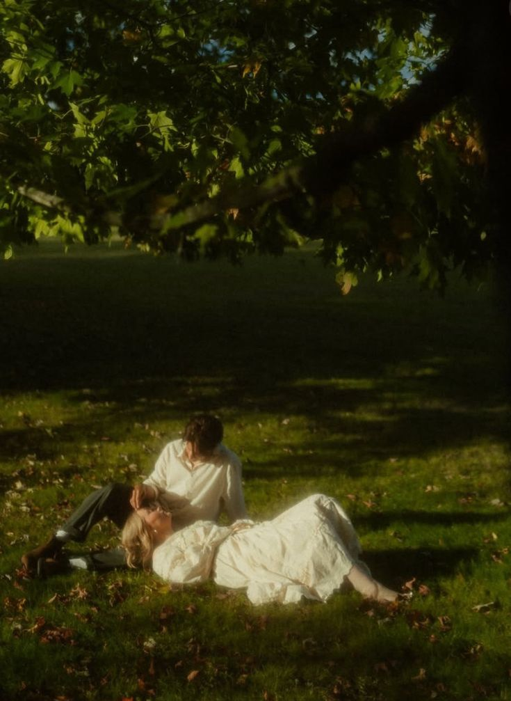
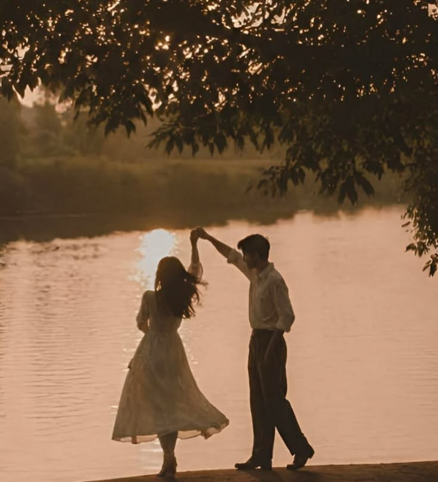
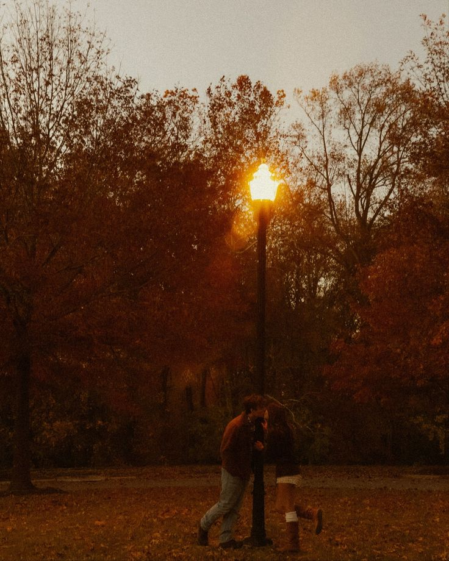

Perché perderti mi ha insegnato il tuo valore.
Per leggere la mia piccola letterina digitale💖Ci sono stati momenti in cui non ti ho trattata come meritavi. Non ti chiedo di dimenticare. Ti chiedo solo di amarmi comunque per i miei brutti errori.



Sono felice che tu sia tornarta nella mia vita e ora ti voglio rendere felice anche a te, non ti devo poco ma tanto, ma non saranno regali, pensieri, battute, voglio renderti dinuovo felice giorno per giorno, e cercare di aiutarti il piu possibile. io come obbiettivo dei miei 18 anni é rendere la mia viola piu felice che mai. Pensa che oggi 7 ottobre mi mancavi cosi tanto che mi sono messo a guardare una semplice bottiglia, d'acqua comprata alle macchinette ed era fredda, intato che si riscaldava c'erano tutte delle piccole goccioline che rimanevano ferme sulla bottiglia, e con il riflesso del sole mi facevano pensare a te perché so che te adori tanto i glitter, e li mi misi a sorridere totalmente a caso sembravo un matto ero triste tutto il giorno poi a caso felice come il sole ricordando i bei momenti passati con te che cercavi di attaccarmi i glitter. Con questo voglio dire every cosa mi fa pensare a te perché sei sempre nella mia testa, e nel mio cuore in cui non vorro che mai tu te ne vada, perché sto molto bene con te e tu sei splendida un raggio di sole o una "stellina" come quei sticker che ho messo nella busta pensando a te. Ti amo tantissimo non vedo l'ora di rivederti sorridere.💖🥰 Grazie per avermi dato una seconda possibilità. Ti amo.